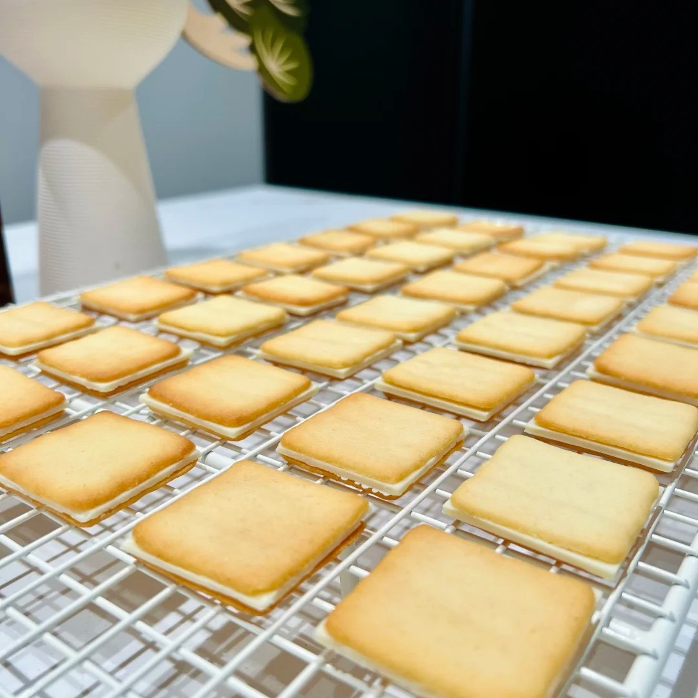
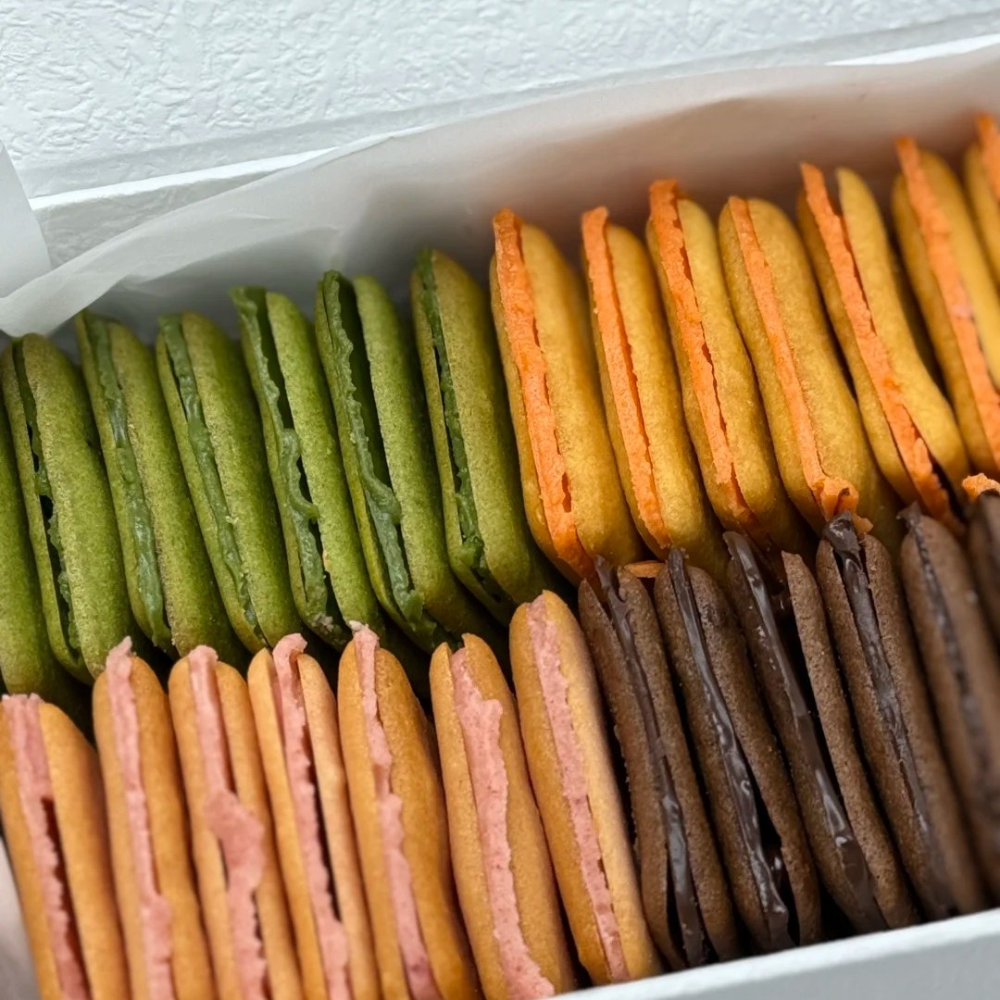

白色恋人



白色恋人是日本北海道札幌市石屋制果株式会社生产的巧克力夹心薄饼，1976年12月推出，包含白巧克力、牛奶巧克力和黑巧克力三种口味。产品包装采用白蓝双色设计并印有利尻山照片，提供图案定制服务，其生产基地改造的白色恋人公园设有博物馆、工厂体验区及定时表演项目。该产品名称源自创始人滑雪时的灵感，年销量约2亿块，曾获1986年Monde Selection金奖。2007年8月因篡改保质期事件全面下架，石屋制果投入10亿日元改进生产设备后于同年11月恢复销售。2020年2月受新冠疫情影响游客锐减，公司两度暂停生产线至3月27日，期间通过库存维持供应。
制作方法：